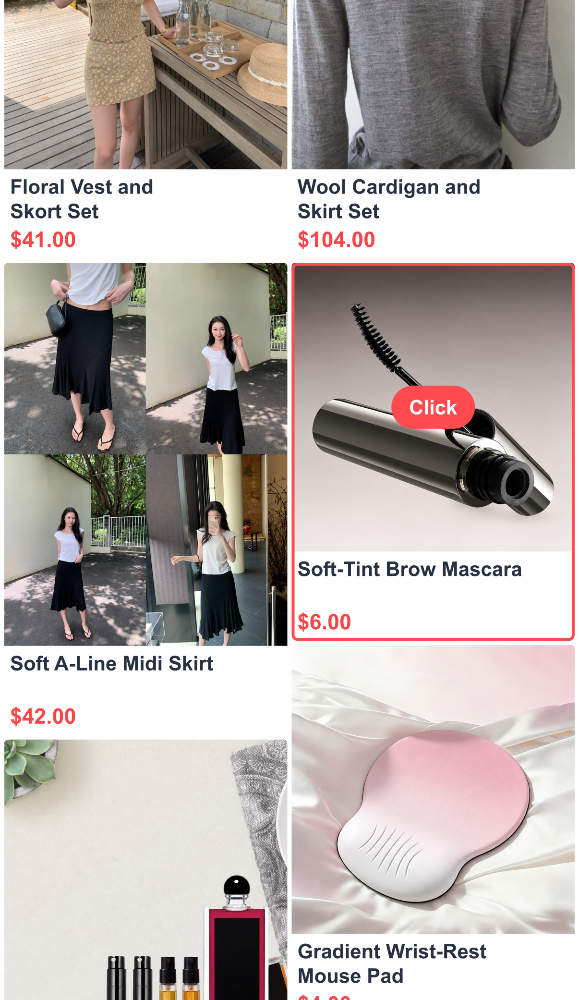
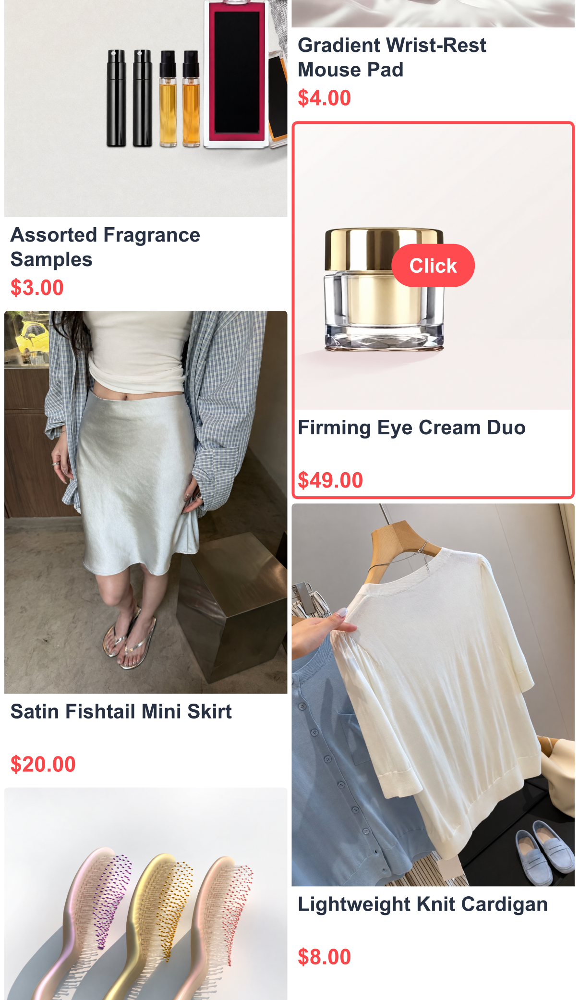
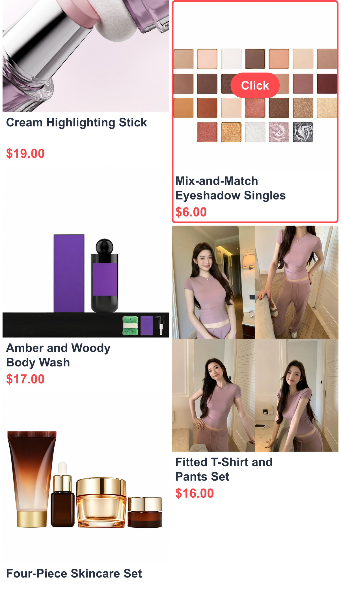

Grounded in real behavior
User profiles, visual observations, product context, and actions aligned at every step.
Real users. Long journeys.
More faithful agents.
Benchmarking interactive user simulation for long-horizon shopping agents —
from the next click to behavior across sessions.
Anonymous submission · Double-blind review



Observe → Act → Evolve
A faithful user simulator should preserve how people browse, decide, and return. UserArena connects real shopping behavior to an executable environment and real-user outcomes.
User profiles, visual observations, product context, and actions aligned at every step.
Chronologically linked visits reveal whether a simulator preserves preferences over time.
Five evaluation levels connect behavior fidelity to controlled offline A/B outcomes.
Agentic recommendation depends on recommendation world models that capture both the shopping environment and how users respond. UserArena pairs 64,729 real-world session trajectories with an interactive environment and controlled offline A/B outcomes. Its five-level evaluation protocol measures environment compliance, local decisions, sequential behavior, personalization, and outcomes. The paper also introduces On-Policy Trajectory Distillation (OPTD), which provides intent-guided teacher targets on student-generated rollouts, constrained by a per-token trust region and recorded behavior.
Explore one shopper’s behavior across three consecutive visits. Inspect the recorded action sequence and selected visual observations.
This action is in the recorded sequence. An English reconstruction of this observation has not been added to the gallery.
Two products, two add-to-cart actions.
English presentation reconstructions with retouched product images and rescaled display prices. Four click observations are available; other steps retain their action labels. “Buy” is a logged action, not confirmation of payment.
Interactive environment access and evaluation runs will be linked here at release.
Choose a level to see what it measures. Replay evaluates the next decision under a real state; rollout evaluates behavior over an entire session.
Measure realistic decision patterns after product visits and the number of actions in each session.
Compare simulators across the full evaluation protocol. Every result below comes from Table 2 of the paper.
| Rank | Method | Input | RVA ↑L0 | OVA ↑L0 | F1 ↑L1 | Acc. ↑L1 | DM-JSD ↓L2 | TE ↓L2 | PF ↑L3 | ΔCTR ↓L4 | ΔACR ↓L4 | T-JSD ↓L4 |
|---|
Paper snapshot · September 25, 2026 · Qwen3.5-2B backbone. Rankings apply to the selected metric; no overall score is defined. Community submissions are not yet open.
Single-session fidelity metrics
led by OPTD
Lower cross-session decision-mix
divergence vs. the strongest baseline
Lower cross-session terminal-outcome
divergence vs. the strongest baseline
Beyond automatic metrics, the paper uses a source-blinded Turing-style evaluation. Annotators inspect two trajectories in a shared user context and identify the machine-generated one — or choose “Unsure.”
Anonymized interface example. English presentation copy; no platform or institutional branding.
On-Policy Trajectory Distillation provides dense teacher supervision on student-generated rollouts. Trajectory-level intent guides learning; a per-token trust region and recorded behavior keep it grounded.
The anonymous code repository is available for review. Data, the hosted environment, and community submissions will be linked when available.
Anonymous manuscript · citation will be updated upon release.
@misc{userarena2026,
title = {UserArena: Benchmarking Interactive User Simulation
for Long-Horizon Shopping Agents},
author = {Anonymous Authors},
year = {2026},
note = {Manuscript under review at ICLR 2027}
}